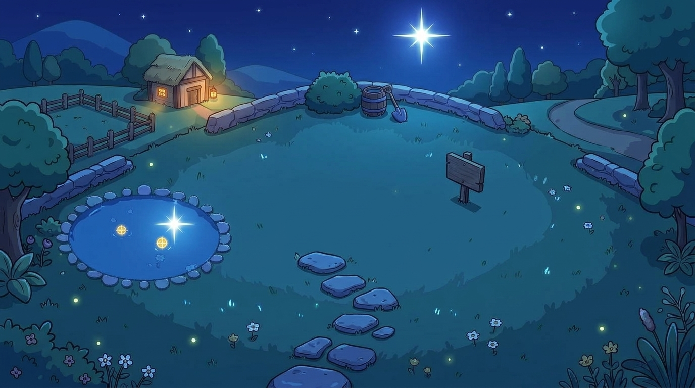
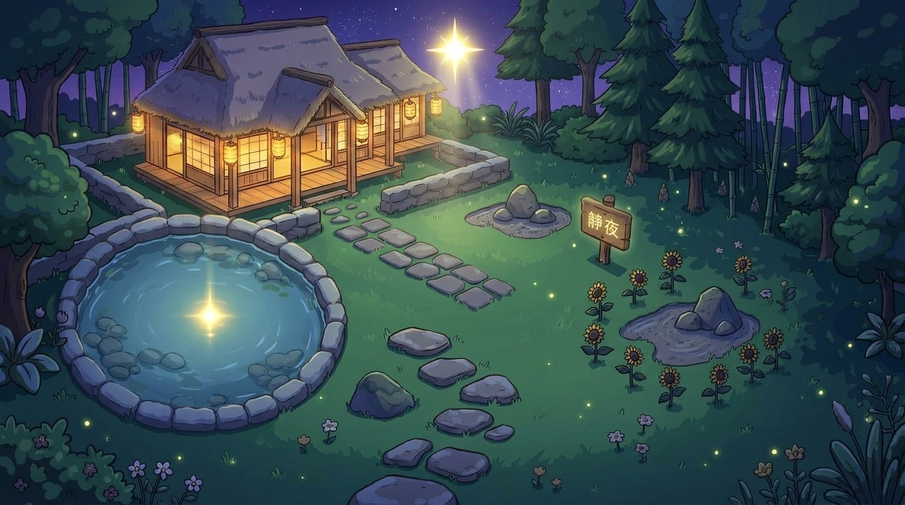

✨ 第五階段「夜睹明星」候選背景圖 ✨
在安靜下來的時候，看見那一顆屬於自己的星。
（均嚴格對齊第一～四階段之左下石圈蓮花池與中右太陽花草皮座標）
🌟 方案 A：【澄澈夜空 · 初心禪舍款】

- 位置 100% 吻合：左下角圓形石圈池塘完全吻合蓮花生成位置，中右側廣闊草皮完全吻合太陽花盛開座標，木牌與石徑分毫不差。
- 夜空意境：純淨湛藍的深邃夜空，正上方高懸一顆晶瑩璀璨的「自性明星」，水池中倒映出相應的星芒。
- 建築意象：左上方保持原初的小草舍，窗戶透出溫暖燈火，象徵「不忘初心，見性成佛」。
🏯 方案 B：【圓滿大成 · 竹林禪舍款】

- 位置 100% 吻合：同樣精準保留左下角石圈池塘與右側太陽花草坪位置，動態蓮花與太陽花 SVG 圖層可完美疊合。
- 圓滿大成進階：呼應一整年（365天）修持圓滿的意涵，左上方的草舍成長為莊嚴溫馨的大禪房（日式和室紙門、懸掛溫暖燈籠、背倚青翠幽竹）。
- 明星輝映：夜空中金白色的「自性明星」灑下柔和佛光，水池宛如明鏡倒映金光，充滿「夜睹明星，明心見性」的大圓滿意境。